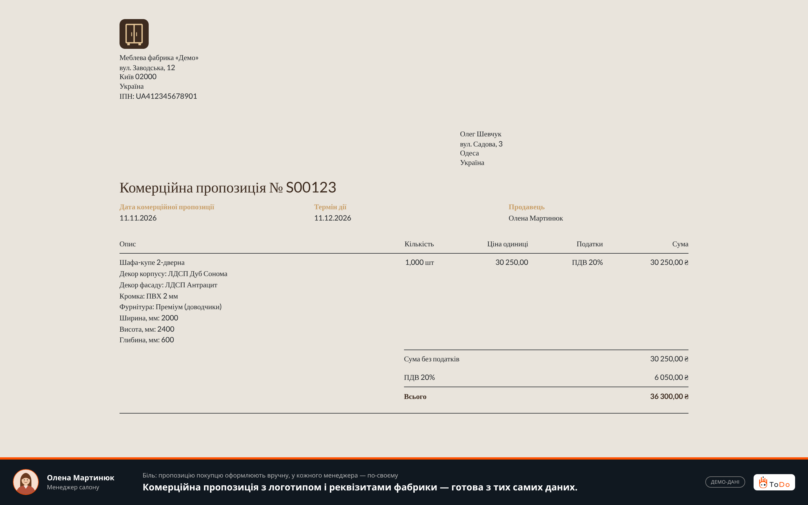
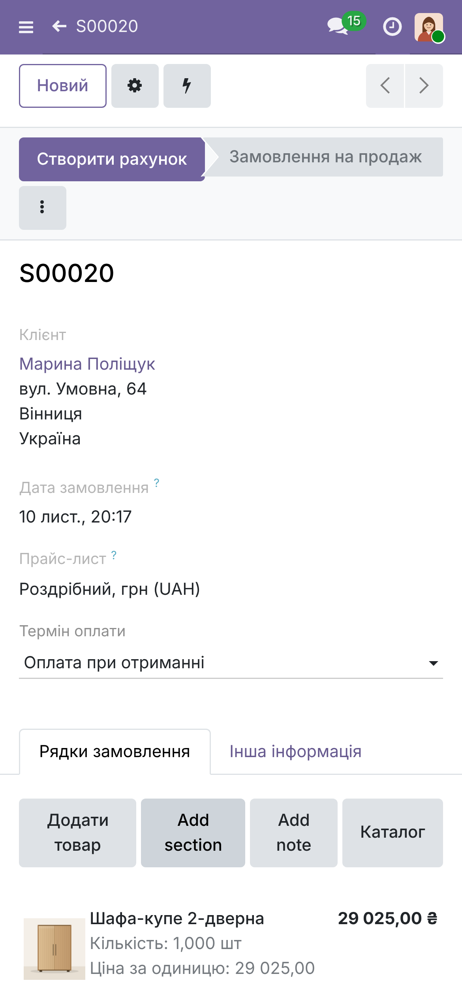
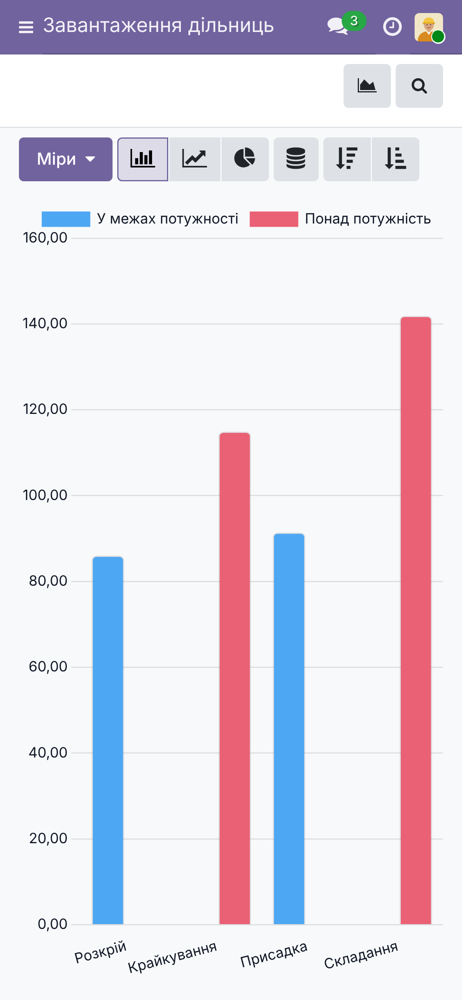
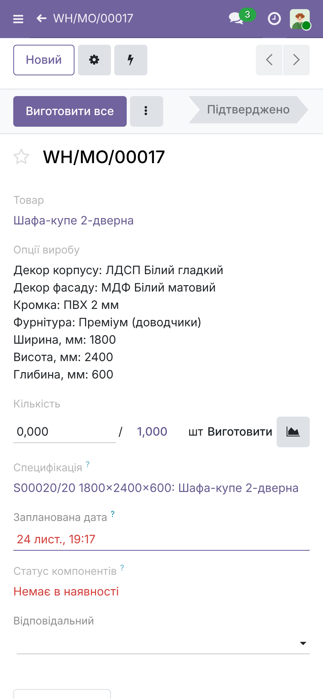
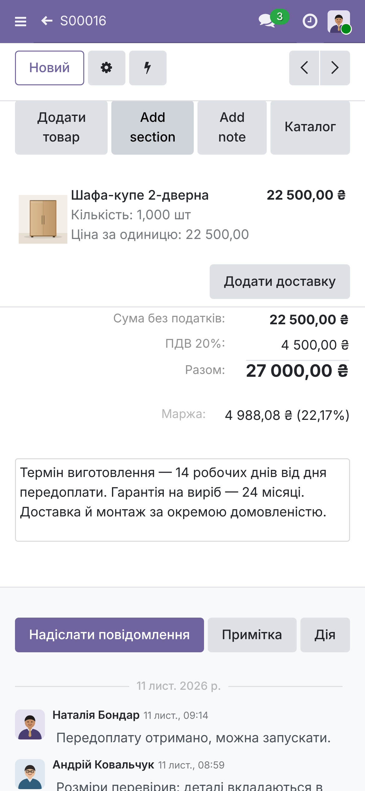

Показ на справжньому Odoo 19 і модулях пакета «меблі» (td_mebli_*) для вигаданої фабрики «Меблева фабрика «Демо»». На екранах — п’ять ролей
(менеджер салону, технолог-конструктор, начальник виробництва, комірник, фінансист) і понад 20 замовлень на різних етапах (пропозиції, очікують запуску, у виробництві, виготовлені). Матеріали: повне відео video/mebli-full-16x9.mp4 (3 хв, 1920×1080), відео для Reels video/mebli-reels-9x16.mp4 (55 с, 1080×1920), скриншоти screens/ (десктоп) і screens-mobile/ (телефон).
Біль у дужках — ідентифікатор із концепції (concept/features.md).
Біль: щоб зрозуміти, що з фабрикою, власник просить звіти у п’яти людей і збирає картину сам; про низьку маржу чи перевантажену дільницю дізнається, коли вже пізно.
Як закрито: меню «Керівник» (модуль td_mebli_dashboard) — один екран із шістьма показниками за 30 днів: виручка 351 386 ₴ і кількість підтверджених замовлень; середня маржа 28,6 % та замовлення з маржею нижче 15% (2 шт.); час від замовлення до запуску 50,6 год; завантаження дільниць (перевантажена — червоним: складання 142%, крайкування 115%); відхід розкрою 7,7 % і економія від ділових обрізків 11 114 ₴; план/факт собівартості виконаних замовлень (план 81 889 ₴ проти 83 873 ₴, +2,4 %). Кожна картка відкриває звіт, з якого взято цифру. Той самий екран працює на телефоні — одна колонка.
Що з Odoo 19 CE: перевірено у вихідниках — є spreadsheet_dashboard (+ _sale, _account, _stock_account…, але без виробничих показників: маржа замовлення, дільниці, розкрій) і board (збірка збережених подань). Тому екран зроблено власною клієнтською дією без Enterprise і без бібліотек; дані рахує сервер із тих самих замовлень, виробничих замовлень і завдань розкрою, що й звіти.


Біль: опції шафи чи кухні рахують на калькуляторі, а маржу з’ясовують, коли виріб уже виготовлено.
Як закрито: покупець обирає декор, кромку, фурнітуру й називає розміри; менеджер одразу бачить ціну й маржу (у прикладі — 39%),
а пропозиція з логотипом і реквізитами фабрики готова з тих самих даних.



Біль: специфікацію вручну переносять між програмами проєктування, розкрою й обліку.
Як закрито: з опцій і розмірів автоматично виходить специфікація: плити в м², кромка в метрах, деталі з розмірами. Змінили ширину — перерахувалось усе.

Біль: статус замовлення живе в чатах і таблицях, цілісної картини немає.
Як закрито: після підтвердження виробниче замовлення створюється само. Дошка показує всі замовлення за етапами з маржею й часом очікування запуску;
список виробництва — клієнт, термін, що в роботі, чого не вистачає; червоним — замовлення, які за планом не встигають у термін.


Біль: про нестачу розсувної системи дізнаються на складанні.
Як закрито: у виробничому замовленні нестача компонента видна одразу (стандартний облік наявності Odoo за специфікацією замовлення), закупівля встигає замовити.

Біль: не вистачає людей чи світла — план летить, а де саме, не видно.
Як закрито: завантаження кожної дільниці у % від тижневої потужності; у прикладі складання — 142%, крайкування — 115% (червоним), решта — 86–91%.

Біль: розкрій під кожне замовлення — окрема ручна задача; відходи з’ясовуються після розкрою, обрізки губляться.
Як закрито: деталі кількох замовлень збираються в одне завдання; карта показує цілий лист і лист, узятий з обрізка, з легендою; відсоток відходів і економія
від обрізків у гривнях (у прикладі 5,02 м² і 2 303,52 ₴ на одному завданні, відходи 10,4%). Ділові обрізки стоять на обліку з розмірами й площею, наступний розкрій бере їх першими.


Біль: фактична собівартість відома заднім числом; ніхто не знає, скільки замовлення чекає запуску.
Як закрито: вартість за специфікацією поруч із реальною по матеріалах і годинах (у прикладі 19 339,42 ₴ проти 20 115,37 ₴; перевитрата плити й кромки видна по рядках);
середній час від замовлення до початку роботи — 50,6 год, по кожному замовленню окремо; звіт собівартості — маржа 12,1–39,1%, у середньому 28,1%, низька маржа червоним.


Як закрито: справжній мобільний інтерфейс Odoo 19 (емуляція телефона 390×844, торкання): менеджер салону відкриває замовлення й рядок із розмірами та підтверджує його; начальник виробництва дивиться дошку замовлень і завантаження дільниць; комірник — ділові обрізки й виробниче замовлення з нестачею матеріалу; фінансист — маржу замовлення в картці.







Що на телефоні незручно (чесно): широкі таблиці (звіт собівартості замовлень, перелік деталей розкрою) гортаються вбік — для маржі на телефоні краще картка замовлення; кнопка «Підтвердити» лежить у меню «⋮»; частина стандартних підписів Odoo (напр. «Add section», «Add note») лишається англійською — це переклад ядра, не пакета. Рамка телефона на відео намальована нейтрально.
Імітація (позначена на екранах компактною позначкою): розрахунок розкрою — проста евристика замість програми розкрою; усі дані — фабрика, люди, покупці, ціни,
залишки, історія повідомлень, дати й тривалості операцій — вигадані; потужність дільниць задана для показу; ілюстрації виробів намальовані для показу.
Є в коді пакета (35 автотестів проходять): конфігуратор із розмірами й ціною, специфікація й виробниче замовлення з опцій, планова собівартість і маржа,
завдання розкрою з прийомом результату (інтерфейс для файлу реальної програми) та картою, ділові обрізки як складський залишок, дошка замовлень, завантаження дільниць,
час від замовлення до запуску. План/факт, нестача компонентів, рахунки й оплати — стандартні можливості Odoo, на які спирається пакет.
Не показано й не обіцяється: автоматичне оновлення дашборда в реальному часі, налаштування показників користувачем, імпорт із програми проєктування, підключення реальної програми розкрою, курс євро в маржі, доставка й монтаж, рекламації.